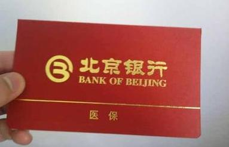

工作之后，员工会接触到涉及自身利益的五险一金，其中就包括医保，医保在北京地区是可以部分取现的，但需要医保存折，那么医保存折如何办理呢？

根据《北京市基本医疗保险规定》规定，北京医疗保险基金实行社会统筹和个人账户相结合的原则，实行“统账结合”的管理模式，医保基金分为统筹基金和个人账户两部分，个人账户那部分则打入到为参保人员建立的医保存折。自2001年4月开始，经相关部门批准北京银行作为北京市医疗保险基金的结算和存储银行，同时负责为参保人员发放医疗保险专用存折，北京各单位在备齐所需资料后去北京银行各区支行领取医保存折。
领取条件：
1、属于首次参保；
2、正常缴纳医疗保险费用3个月以上。
领取资料：
1、社会保险登记证；
2、单位介绍信；
3、经办人身份证。
领取流程：单位经办人备齐规定资料前往单位辖区北京银行支行办理领取手续即可。但个人不能直接领取，只能由单位统一领取。
但是也有员工表示疑问：为什么我没有拿到医保存折呢？实际上，北京的医疗存折一般要三个月以后才能发放，如果没拿到手，有可能是单位办事人员忘记领取了，这个需要到社保中心开领取存折的单子，拿着单子到指定的北京银行去取，即使员工丢失或一直没领取也不要紧，员工本人可以持医保卡、身份证原件到北京银行窗口挂失即可补办，医保存折里的钱也会一直保存着。